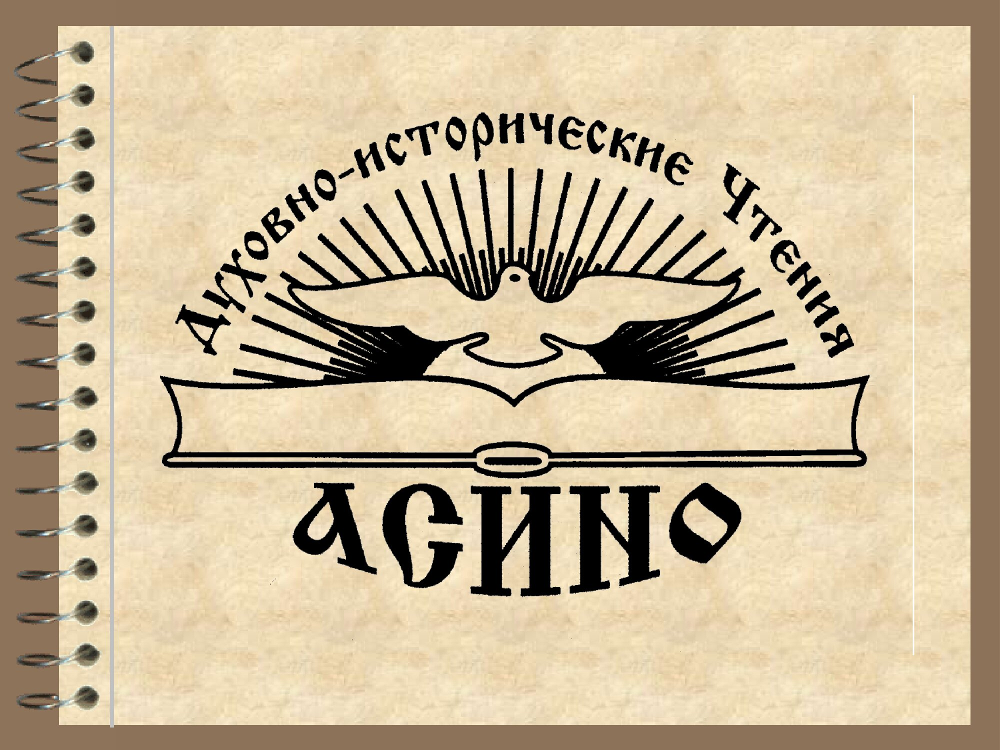

Летопись Духовно-исторических Чтений 2007-2019

Духовно-исторические Чтения 2019
15 мая 2019 г. в зале искусств Библиотечно-эстетического центра города Асино состоялось официальное открытие XV Духовно-исторических Чтений «Молодежь: свобода и ответственность», участниками которого стали священнослужители, представители районной администрации, СМИ, библиотекари, учащиеся и преподаватели, жители города.
С приветственным словом к присутствующим обратились: благочинный Восточного округа Томской и Асиновской епархии, настоятель кафедрального храма Покрова Пресвятой Богородицы г. Асино, священник Александр Никулин, депутат Законодательной Думы Томской области Олег Владимирович Громов, начальник управления культуры, спорта и молодежи администрации Асиновского района Сергей Викторович Ефименко. С докладом на тему «Можно ли быть свободным без ответственности?» выступила помощник настоятеля кафедрального храма Покрова Пресвятой Богородицы г. Асино по работе с молодежью Ирина Витальевна Цыкунова; заместитель директора по учебно-воспитательной работе МАОУ СОШ № 4 Наталья Валентиновна Воробьева осветила тему «Необходимость свободы в школьном образовании»; председатель Совета ветеранов образования Людмила Александровна Шпаченко говорила о патриотическом воспитании подрастающего поколения.
Духовно-исторические Чтения в городе Асино и Асиновском районе будут проходить с 15 по 25 мая в рамках областных XXIX Дней славянской письменности и культуры. Организаторы Чтений пригласили всех присутствующих на протяжении этих дней посетить мероприятия в библиотеках города и района, учреждениях культуры и образования, краеведческом музее и техникуме.
В рамках Духовно-исторических чтений с воспитанниками Центра помощи детям, оставшимся без попечения родителей, сотрудником детской библиотеки проведена акция по чистоте речи. Ребята ответили на вопросы анонимной анкеты, проанализировав которые библиотекари увидели, что большинство ребят к использованию ненормативной лексики относится отрицательно. Опрошенные подростки считают, что с этим неприятным явлением обязательно нужно бороться путём воспитания и самовоспитания, а иногда и с помощью системы штрафов! В заполнении анкет участвовали в равной степени и девушки и молодые люди, но не зависимо от пола все они отметили, что материться в присутствии девушек некрасиво, и никто из ребят не хотел бы, чтобы их дети употребляли в своей речи нецензурные слова!
22 мая в рамках XV Духовно-исторических чтений, на улицах города Асино была проведена акция «Чистое слово». Сотрудники библиотеки совместно с ребятами студии «Браво», рук. Бахарев В.С., призывали жителей города отказаться от сквернословия. Рассказывали, что сквернословие опасно для здоровья. Отказавшись от матерного языка, вы обретёте: здоровье, счастье, везение, ясность мыслей, поступков, любовь ваших близких. Раздавали прохожим закладки, памятки: «Как избавиться от сквернословия». Так же среди населения провели опрос на тему «Сквернословия».
В акции приняли участие более 100 человек.
В рамках Духовно-исторических чтений со старшими воспитанниками Центра помощи детям, оставшимися без попечения родителей, состоялось мероприятие, посвящённое самому чтимому в русской православной церкви святому. Сотрудник детской библиотеки рассказал ребятам историю мальчика Варфоломея, встреча которого с монахом-схимником изменила не только его собственную жизнь, но впоследствии повлияла через Сергия Радонежского (это имя принял Варфоломей при постриге) на жизни многих русских людей и историю самой России.
Ребята узнали, почему именем и иконой преподобного Сергия благословляют воинов и спортсменов, почему Радонежский считается покровителем учащихся, познакомились с историей и архитектурным ансамблем Троице-Сергиевой лавры. Активно обсуждали, могли ли на самом деле случиться те чудеса, которые описывал в житиях Сергия Радонежского Епифаний Пермудрый. Многие впервые узнали, что знаменитую икону Святой Троицы Андрей Рублёв писал в память о преподобном. И, конечно, обсуждался вопрос о будущем монашества и православной веры. В силу возраста многие подростки относят себя к атеистам, но вопросы истории и культурного наследия православия в России для них небезразличны.
15 мая 2019 г. в зале искусств Библиотечно-эстетического центра города Асино состоялось официальное открытие XV Духовно-исторических Чтений "Молодежь: свобода и ответственность", участниками которого стали священнослужители, представители районной администрации, СМИ, библиотекари, учащиеся и преподаватели, жители города. С приветственным словом к присутствующим обратились: благочинный Восточного округа Томской и Асиновской епархии, настоятель кафедрального храма Покрова Пресвятой Богородицы г. Асино, священник Александр Никулин, депутат Законодательной Думы Томской области Олег Владимирович Громов, начальник управления культуры, спорта и молодежи администрации Асиновского района Сергей Викторович Ефименко. С докладом на тему "Можно ли быть свободным без ответственности?" выступила помощник настоятеля кафедрального храма Покрова Пресвятой Богородицы г. Асино по работе с молодежью Ирина Витальевна Цыкунова; заместитель директора по учебно-воспитательной работе МАОУ СОШ № 4 Наталья Валентиновна Воробьева осветила тему "Необходимость свободы в школьном образовании"; председатель Совета ветеранов образования Людмила Александровна Шпаченко говорила о патриотическом воспитании подрастающего поколения. Духовно-исторические Чтения в городе Асино и Асиновском районе будут проходить с 15 по 25 мая в рамках областных XXIX Дней славянской письменности и культуры. Организаторы Чтений пригласили всех присутствующих на протяжении этих дней посетить мероприятия в библиотеках города и района, учреждениях культуры и образования, краеведческом музее и техникуме.
24 мая в России отмечается День славянской письменности и культуры. Праздник известен как день памяти первоучителей славянских народов — святых равноапостольных братьев Кирилла и Мефодия. Празднование памяти святых братьев имело место у всех славянских народов с давних времен, но постепенно было утрачено. Лишь в начале 19 века, когда началось движение по возрождению славянских народностей, обновилась и память славянских первоучителей. В рамках этого праздника в отделе абонемента БЭЦ была оформлена книжно-иллюстративная выставка "Кирилл и Мефодий - первые первоучители".
Что такое книжный знак, как его создают художники, для чего он необходим, узнали воспитанники Воскресной школы г. Асино 19 мая в ходе арт-урока "Экслибрисные экзерсисы", подготовленного сектором графики Асиновского библиотечно-эстетического центра в рамках Дней славянской письменности и культуры. Ребята рассматривали книжные знаки Нины Ивановны Казимовой, Василия Тимофеевича Кеменова, знакомились с историей Духовно-исторических Чтений и конкурса "Ex libris", проходящих в нашем городе в 2019 году уже в пятнадцатый раз. В завершении встречи ребята попробовали себя в роли художников-экслибрисистов и попытались создать свой книжный знак.
17 мая в читальном зале БЭЦ в рамках Духовно-исторических чтений состоялся круглый стол "Свобода и ответственность, как базовые нравственные ценности человека". В обсуждении темы приняли участие обучающиеся 9 класса школы №4, преподаватели, библиотекари и священнослужители храма Пресвятой Богородицы. Участники рассуждали, всегда ли хороша свобода и как научиться находить её границы? Как различить истинную свободу от вседозволенности? Ребята искренне отвечали на вопросы и рассуждали, как сложится их жизненный путь. Могут ли в будущем они отличить мнимую свободу от истинной. Подводя итог выше сказанному, все единогласно сошлись во мнении, что смысл свободы – это сделать правильный выбор в жизни и нести ответственность за свой выбор. Мы свободны в своих решениях, но должны думать о последствиях каждого своего шага, во имя близких, и окружающих нас людей!
20 мая в библиотеке - филиале № 4 прошел урок-игра "На Руси учились так…" для учеников 3 класса. С помощью электронной презентации ребятишки совершили увлекательное путешествие в далекое прошлое, чтобы узнать, а как же в старину учились школьники, кто их обучал и каким наукам… В старину, по древнему обычаю, детей отдавали на учение в день святого пророка Наума, называемого в народе Грамотником. И в народе говорили так: "Пророк Наум наставит на ум". Празднуется этот день 14 декабря. Этот день не случайно называли "мудрым" и молились святому Науму, прося "навести на ум" -надоумить, научить. В этот день родители благословляли своих детей на учение, да и сами ученики просили святого Наума "Батюшка, Наум благослови на ум!" Дети не только смотрели презентацию и слушали библиотекаря, но и "оживляли" некоторые картинки. Они разыграли сценку "Знакомство с учителем", стояли на горохе, писали на кусочках бересты и ели кашу из одного горшка деревянными ложками, чтобы стать настоящими однокашниками. Много интересного и полезного узнали современные школьники о том, как учились их ровесники в далеком прошлом.


{kind=link}
{kind=link}
{kind=link}
{kind=link}
{kind=link}